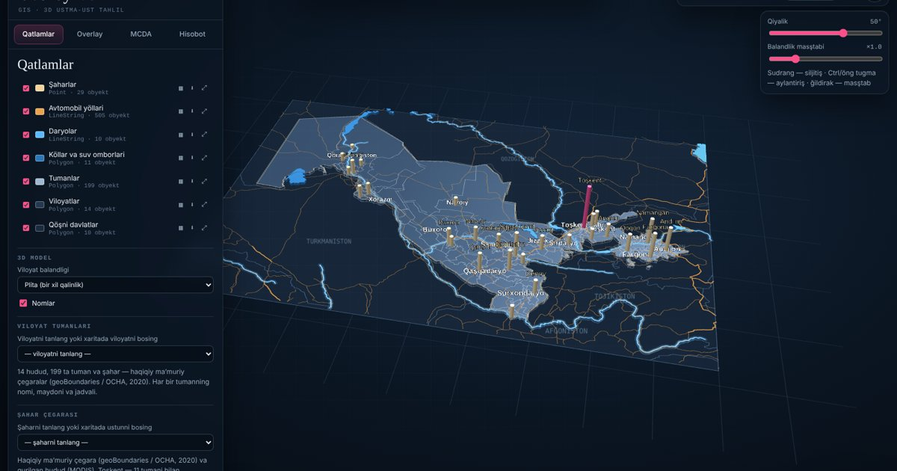

Ustma-ust tahlil nima?
Ustma-ust tahlil (overlay analysis) — bir hududga oid bir neçta xarita qatlamini geometrik birlaştirib, heç bir dastlabki qatlamda bölmagan yangi ma’lumot hosil qiliş usuli. Masalan, «daryolar» va «viloyatlar» qatlamlari kesiştirilsa, har bir viloyatdan qança uzunlikdagi daryo oqib ötişi ma’lum böladi. Bu usul şaharsozlik, qişloq xöjaligi, suv xöjaligi, favqulodda vaziyatlar va ekologiyada joy tanlaş va xavfni baholaşning asosiy vositasidir.
Platforma imkoniyatlari
Ma’lumotlar manbalari
| Ma’lumot | Manba |
|---|---|
| Hududlar doimiy aholisi | Özbekiston Respublikasi Milliy statistika qömitasi (2026-yil 1-oktabr holatiga) |
| Tumanlar çegaralari (199 ta) | geoBoundaries gbOpen UZB ADM2 (OCHA ROCCA, 2020; CC BY 3.0 IGO) |
| Viloyatlar, daryolar, köllar, yöllar, şaharlar | Natural Earth 1:10m (jamoat mulki) |
| Relyef | ETOPO1 Global Relief Model (NOAA) |
Texnologiyalar
deck.gl (WebGL 3D vizualizatsiya), Turf.js (vektor geometriya), proj4 (kartografik proyeksiyalar), GeoTIFF.js, shpjs; ma’lumotlar bazasi — Supabase (PostgreSQL, real vaqt rejimi). Maydon va masofalar Özbekistonga moslangan Lambert teng maydonli proyeksiyasida (LAEA, φ₀ = 41,5°, λ₀ = 64°) hisoblanadi.
Muallif
Platforma Muhammad al-Xorazmiy nomidagi Toşkent axborot texnologiyalari universiteti (TATU) talabasi Rahimov Bobomurod tomonidan «Geoaxborot texnologiyalari» fani doirasida «Fazoviy ma’lumotlarni ustma-ust tahlil qiliş usullari va ularning qöllanilişi» mavzusidagi mustaqil iş sifatida işlab çiqilgan.